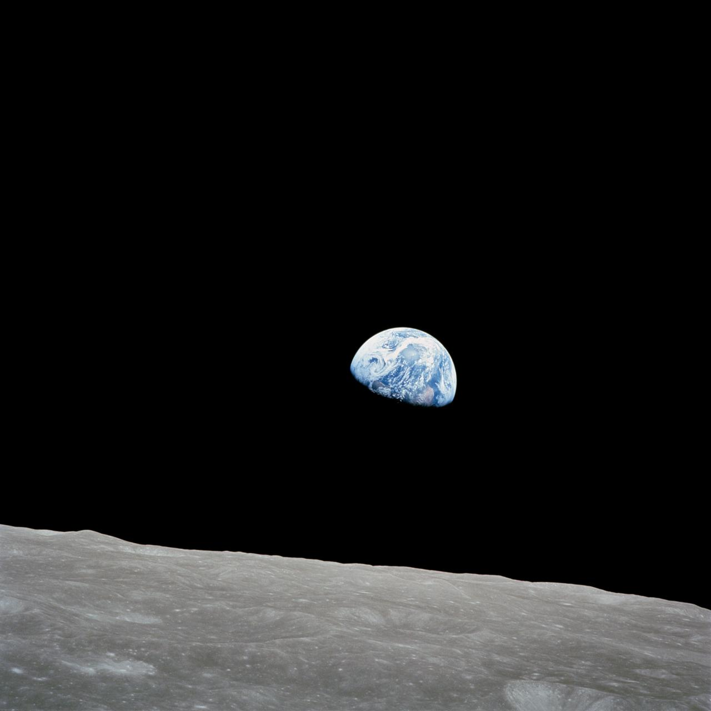

Moonshot Mentality
한계를 뛰어넘어라
현실에 안주하지 않고 불가능해 보이는 목표에 도전합니다. 위험은 계산하되 도전을 두려워하지 않습니다.

A SMALL TEAM. A GIANT LEAP.
Even if you miss,
you'll land among the stars.
더 멀리 가고 싶은 사람들이 모였습니다.
AI로 새로운 일상을 만드는 팀, BeeRFriend.
작품이 끝나도, 좋아하는 마음은 남습니다.
BeeRFriend는 그 마음이 새로운 경험으로 이어질 방법을 고민합니다.
가벼운 안부부터 길었던 하루의 이야기까지.
편안하게 말을 건넬 수 있는 경험을 고민합니다.
화면을 닫은 뒤에도 문득 생각나는 대화.
기술로 일상에 새로운 즐거움을 더합니다.
캐릭터와 대화하고, 목소리로 이어지는 경험.
BeeRFriend가 만드는 AI 컴패니언 프로덕트입니다.

WHAT WE BELIEVE
불가능해 보이는 목표에 도전하고,
한계를 돌파하며 성장하는 것을 즐깁니다.
Moonshot Mentality
현실에 안주하지 않고 불가능해 보이는 목표에 도전합니다. 위험은 계산하되 도전을 두려워하지 않습니다.
Never Stop Growing
끊임없이 배우고 변화합니다. 기존의 전문 영역에 갇히지 않으며 스스로 한계를 확장합니다.
Passion & Ownership
지시를 기다리지 않고 주도적으로 행동합니다. 자신의 일과 프로덕트를 진심으로 좋아하며 자발적으로 몰입합니다.
Fail Fast, Learn Faster
빠르게 검증하고 배우며, 가능성이 없다면 과감하게 방향을 바꿉니다. 실패보다 학습 없는 반복을 경계합니다.
Reason Over Authority
계급과 직급이 아닌 논리와 근거로 설득합니다. 누구나 자유롭게 비판하고 의견을 제시할 수 있습니다.
Respect & One Team
같은 목표를 향해 달리는 전우 같은 관계를 지향합니다. 개인의 뛰어난 성과도 팀 전체를 해친다면 인정하지 않습니다.
목표와 방법은 자율적으로, 협업은 적극적으로.
빠른 애자일 사이클을 반복하며 제품을 발전시킵니다.
의견이 갈리면 실험과 데이터로 판단하고, 실험이 불가능하면 합의를 추구합니다.
개인의 성장을 지원하며, 더 큰 도전을 위해 떠나는 것도 응원합니다.
우리가 바라는 몰입은 자발적입니다. 장시간 근무를 강제하지 않습니다.
이 가치들을 출발점으로, 함께할 공동창업자와 우리의 문화를 계속 만들어갑니다.
크게 꿈꾸고, 빠르게 배우고, 끝내 만들어내는 사람들.
BeeRFriend의 다음 도약을 함께 만들어 주세요.